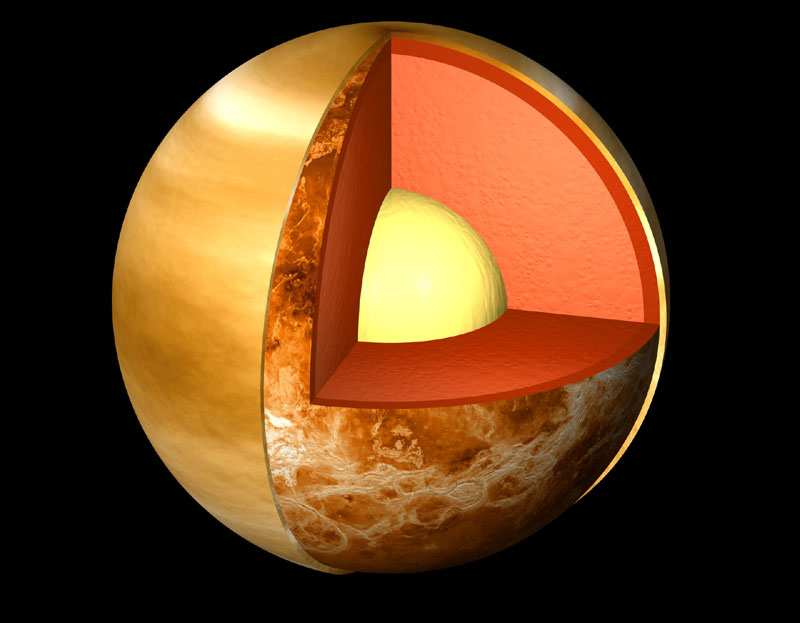

Венера

Венера находится к Земле ближе всех остальных планет нашей Солнечной системы. День на Венере длится дольше собственного года. Из всех планет только Венера вращается вокруг Солнца по часовой стрелке. Также на Венере нет смен времен года.
На главную